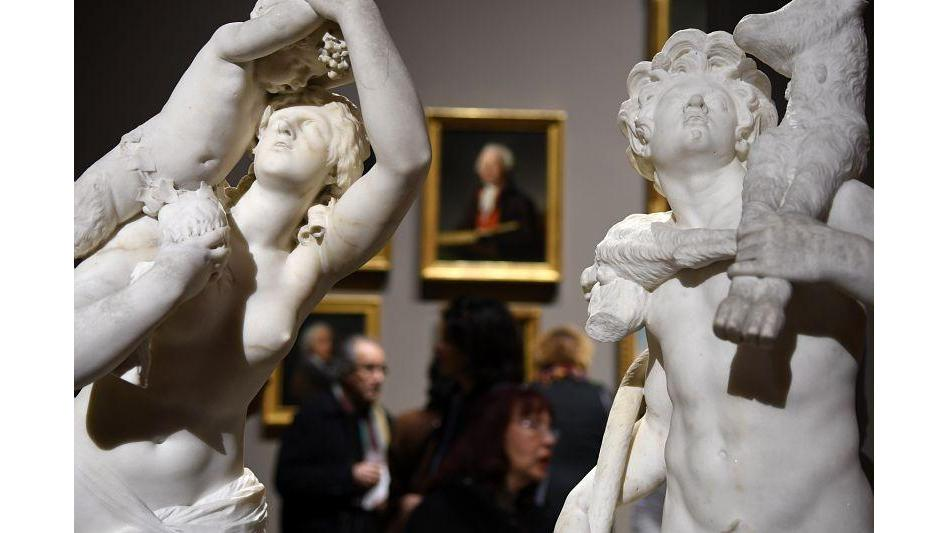

Musée des Beaux-Arts
Adresse : 9 Rue Edouard Stephan, 13004 Marseille
téléphone : 04 91 14 59 30
Horaire : Du mardi au dimanche de 9h à 18h
Fermeture hebdomadaire le lundi, sauf les lundis de Pâques et de Pentecôte.
Fermeture les jours suivants : 1er janvier, 1er mai, 1er et 11 novembre et le 25 décembre.